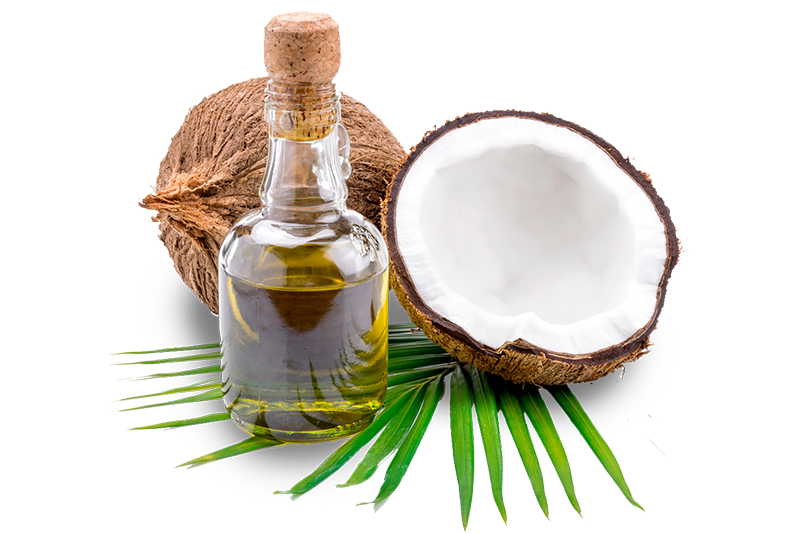

Virgin Coconut Oil (VCO) for Sale Indonesia Bulk Wholesale
HS Code:
151311 Coconut oil, crude
Virgin Coconut Oil (VCO) is a natural oil extracted from fresh coconut meat without chemical refining or excessive heating.
Widely used in food, health, and cosmetics, VCO is valued for its nutritional, antimicrobial, and antioxidant benefits.
Unlike Crude Coconut Oil (CCO), which is made from copra and requires further refining.
Virgin Coconut Oil (VCO) Uses:
Food & Beverage: VCO is used as a healthy cooking oil, dietary supplement, and ingredient in functional foods, thanks to its natural flavor and high MCT content.Health & Wellness: Popular in traditional and modern medicine, VCO supports immunity, digestion, and overall vitality due to its antimicrobial and antioxidant properties.
Cosmetics & Personal Care: Widely applied in skincare, haircare, and body care products, VCO acts as a natural moisturizer and nourishing agent.
Pharmaceuticals: Utilized as a carrier oil and active ingredient in natural remedies, VCO enhances formulation stability and therapeutic effectiveness.
Indonesia Crude Coconut Oil (CCO) Benefits:
Crude Coconut Oil (CCO), derived from the dried kernel (copra) of mature coconuts (Cocos nucifera), is one of Indonesia’s most valuable agro-industrial commodities.Naturally abundant in lauric acid and medium-chain triglycerides (MCTs), it plays a vital role as a base ingredient for diverse applications spanning the food, cosmetic, pharmaceutical, and industrial sectors.
With its distinctive golden-yellow hue, mild coconut aroma, and versatile functionality, CCO is globally recognized as the essential raw material that undergoes further refining into RBD Coconut Oil or is processed into a wide variety of value-added products.
As one of the world’s leading coconut producers, Indonesia consistently delivers crude coconut oil that meets international quality standards, offering reliable supply and competitive value for global trade.
Key Features & Benefits:
- High Lauric Acid Content: Contains around 45–50% lauric acid, providing stability, antimicrobial properties, moisturizing benefits, and a unique texture highly valued across industries.
- Multi-Purpose Raw Material The primary input for refined coconut oil (RBD), margarine, soaps, detergents, oleochemicals, and biodiesel.
- Nutritional Properties Rich in medium-chain triglycerides (MCTs) that support energy metabolism and health benefits.
- Diverse Global Applications Extensively used in food processing, cosmetics, pharmaceuticals, and industrial formulations worldwide.
- Reliable & Scalable Supply Supported by Indonesia’s vast coconut plantations and established processing facilities to ensure steady production and exports.
- Export-Grade Quality Produced under strict quality control measures to comply with international trade and safety standards.
One Wholesale Indo
Many global businesses often face significant challenges when trying to access high-quality products from Indonesia.Complex supply chains, lack of transparency, inconsistent quality standards, and logistical uncertainties frequently create barriers for international buyers.
These challenges make it difficult for small and medium enterprises (SMEs) and global companies to secure trusted Indonesian products with confidence.
One Wholesale Indo was established to simplify this process. By connecting SMEs and buyers worldwide directly with reliable Indonesian suppliers, we ensure that access to Indonesia’s finest products becomes quicker, safer, and transparent.
With a strong commitment to quality control, transparent sourcing, and secure international trade practices, One Wholesale Indo provides a trusted platform where businesses can confidently source premium Indonesian products
Get Top-Quality Crude Coconut Oil (COO) from Indonesia
Are you looking for a reliable supply of high quality Coconut Oil for your needs, whether in small or large quantities and across various types?You've come to the right place! Contact us, and we will be happy to help you find the solution that suits your needs! Click the displayed WhatsApp button.